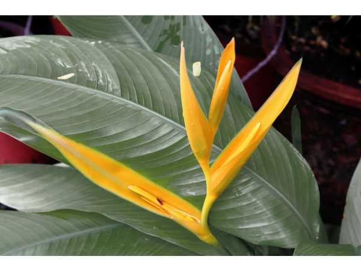

Heliconia psittacorum
Common Names: Golden Torch, Parrot's Beak, Parrot Heliconia
Local Name: Heliconia (Tamil)
Family: Heliconiaceae
Origin: South America and Caribbean
Plant Type: Perennial herbaceous plant
Average Lifespan: 10–20 years with proper care
| Growth Habit | Clump-forming upright herb growing from rhizomes |
| Plant Size | 1–2 meters tall |
| Leaves | Large, paddle-shaped, bright green, 30–60 cm long, resembling banana leaves |
| Flowers | Erect inflorescences with orange-red bracts tipped with yellow-green; true flowers small and tubular |
| Flower Characteristics | Bracts are boat-shaped, waxy, long-lasting; blooms nearly year-round in tropical climates |
| Root System | Thick, fleshy rhizomes spreading laterally underground |
| Climate | Tropical and subtropical; frost-sensitive |
| Temperature Range | 18–35°C; does not tolerate frost |
| Rainfall Requirement | 1500–3000 mm annually; high humidity preferred |
| Soil Type | Rich, moist, well-drained loamy soil with high organic matter |
| Soil pH Preference | 5.5–7.0 |
| Sun Requirement | Full sun to partial shade (4–6 hours) |
| Spacing | 1–2 meters between clumps |
| Irrigation Method | Regular watering; keep soil consistently moist |
| Water Requirement | High; do not allow to dry out completely |
| Can it Grow in Pots? | Yes, in large containers (30+ liters) |
| Fertilizer Schedule | Monthly during growing season with balanced NPK fertilizer |
| Recommended Organic Fertilizers | Compost, well-rotted cow manure, banana peel compost |
| Pesticide Frequency | As needed; generally pest-resistant |
| Recommended Organic Pesticides | Neem oil spray for mealybugs and scale insects |
| Mulching Practice | Thick mulch layer (8–10 cm) to retain moisture and protect rhizomes |
| Pruning Time | After flowering; remove spent stems at base |
| How to Prune | Cut old flowering stems to ground level; remove dead or yellowing leaves |
| Common Pests | Mealybugs, scale insects, caterpillars, grasshoppers |
| Common Diseases | Root rot (overwatering), leaf spot, fungal blight |
| Disease Prevention & Remedies | Ensure good drainage; avoid overhead watering; remove infected foliage promptly |
| Flowering Months | Year-round in tropical climates; peak in summer months |
| Pollination Type | Hummingbird and insect pollinated |
| Pollination Notes | Bracts attract hummingbirds; nectar-rich flowers support pollinators |
| Propagation by Seeds | Seeds germinate slowly; soak 24 hours before sowing; germination in 3–6 months |
| Propagation by Cuttings | Rhizome division is the most reliable method; divide clumps every 2–3 years |
| Water Usage | Moderate to high; benefits from mulching to reduce water needs |
| Biodiversity Benefits | Attracts hummingbirds, sunbirds, and butterflies; supports tropical biodiversity |
| Companion Plants | Gingers, bird of paradise, cannas, bananas |
| Commercial Production Regions | Brazil, Costa Rica, Hawaii, India, Southeast Asia |
| Market Uses | Cut flower trade, ornamental landscaping, floral arrangements |
| Market Value (Approx.) | ₹50–150 per stem in Indian flower markets |
| Symbolism | Symbol of tropical beauty and exotic elegance; widely used in tropical garden design |
| Traditional Uses | Leaves used as natural wrapping material; flowers used in traditional ceremonies in South America |
Add your field observations here.